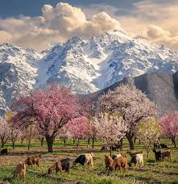

Hunza Valley, located in the northern region of Gilgit-Baltistan, is a breathtaking destination known for its natural beauty, rich history, and peaceful atmosphere. Surrounded by snow-capped mountains and lush green terraces, the valley offers mesmerizing views that leave visitors in awe. Flowing along the historic Silk Road, Hunza has long been a center of cultural exchange and tradition. Landmarks like baltit fort and altit fort reflect its deep-rooted past and architectural heritage. The stunning Attabad Lake, with its vibrant blue waters, adds to the valley’s charm and attracts travelers from around the world.
The historical and cultural importance of Hunza Valley lies in its role as a vital crossroads along the ancient Silk Road, where traders, travelers, and ideas moved between regions for centuries. This strategic location helped shape Hunza into a center of cultural exchange, blending influences from Central Asia, South Asia, and beyond. For hundreds of years, Hunza existed as an independent princely state ruled by local Mirs, preserving its traditions and governance until it became part of Pakistan in 1974. Culturally, Hunza is known for its rich heritage and strong community values. The people of the region have maintained their unique languages, music, festivals, and distinct food culture, which reflects a simple yet healthy lifestyle. Traditional dishes such as Chapshuro (a local meat-filled bread), Diram Phitti (a sweet wheat bread), and Hunza soup made from natural and organic ingredients are widely enjoyed. Historic landmarks like Baltit Fort and Altit Fort stand as symbols of the valley’s architectural brilliance and resilience, offering insight into life in ancient times. The traditions of hospitality, harmony, and respect for nature continue to define Hunza, making it a place where history and culture are still alive in everyday life.
hunza also known as heaven on earth